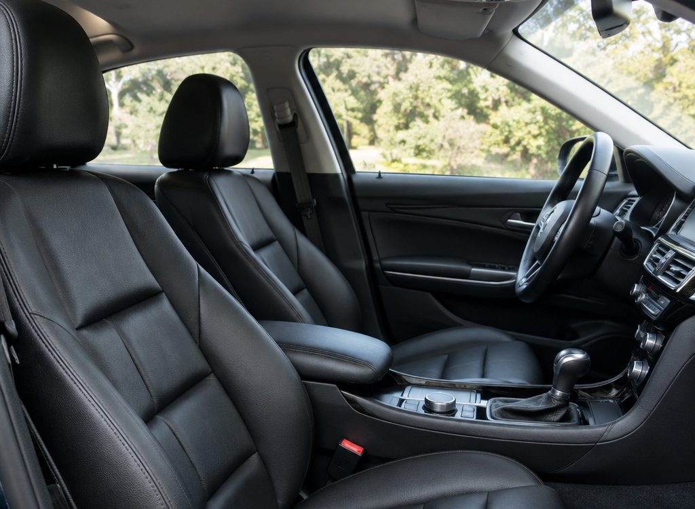
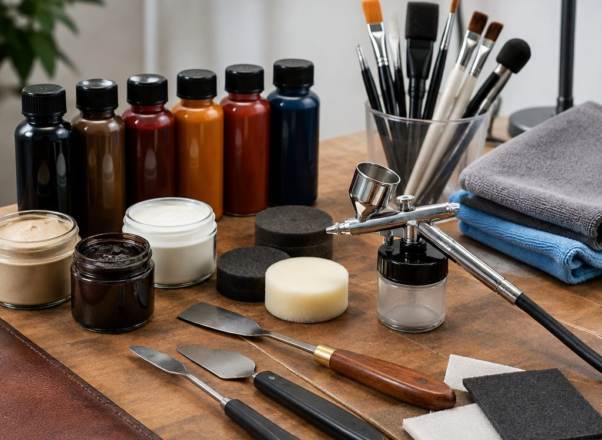

Почему краска «в один слой» не работает
Кожа в салоне — не ровная поверхность. У неё рисунок зерна, поры, натяжение на каркасе и разная толщина в зонах посадки. Если закрасить потёртость, цвет совпадёт, но при боковом свете будет видно пятно: пропадёт фактура.
Поэтому работа идёт слоями: подготовка и обезжиривание, восстановление рельефа, колеровка, финиш. Между слоями — сушка и проверка при разном свете.
Оценка
Смотрим глубину дефекта и состояние основы: если кожа расслоилась, сначала укрепляем её.
Восстановление рельефа
Заполняем и текстурируем так, чтобы рисунок совпал с соседними участками.
Цвет
Колеруем по образцу с элемента, а не «по фото из интернета».
Финиш
Матовое покрытие: без лаковой плёнки, без липкости, с защитой от трения.
Ваш случай
Два шага: где и что. Ниже — план работ, который обычно решает такую задачу.
1. Где дефект
2. Что произошло
Что убивает кожу быстрее пробега
Джинсы и жёсткие швы
Задний карман с заклёпками и грубый шов работают как наждак по боковой поддержке. Именно там появляются первые заломы и потёртости.
Солнце и жара в салоне
Ультрафиолет сушит верхний слой, кожа теряет эластичность и начинает трескаться по сгибам. Летом помогает защита от прямого солнца.
Кремы, масла и влажные салфетки со спиртом
Жиры и спирт разрушают защитное покрытие. После них поверхность сначала блестит, а потом стирается.
Домашние животные
Когти оставляют микропорезы, которые со временем превращаются в трещины.
Агрессивная химчистка
Щёлочь и жёсткие щётки снимают краску вместе с грязью. Потом «салон стал светлее» — это снятое покрытие.
Дешёвые кондиционеры для кожи
Дают силиконовую плёнку, которая собирает пыль и мешает дышать материалу.


Пришлите фото — скажем стоимость
Снимите дефект при дневном свете, добавьте марку, модель и год. По этим данным мы сразу поймём объём и назовём ориентир. Точную сумму подтверждаем после осмотра.